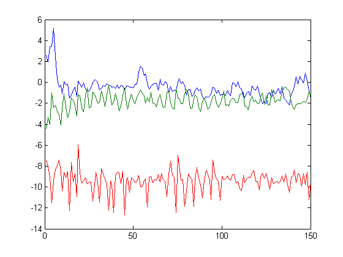
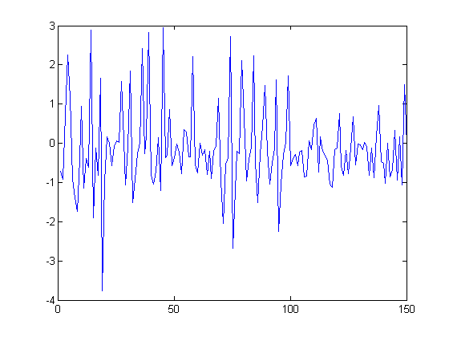
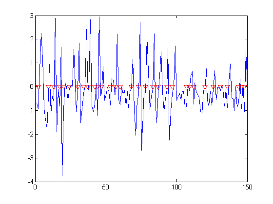

Count steps with acceleration data from your Apple or Android mobile device
You can use the accelerometer in your mobile device to count steps in MATLAB.
Contents
Connect to the mobile device
Use the sensorgroup object to create a connection to your mobile device. In this case, we're using an Apple iPhone 3GS, but you can use an Android device by passing AndroidMobile instead
obj = sensorgroup('AppleMobile');
Waiting for data... To configure your mobile device: 1. Open the Sensor Monitor app. 2. Select the Network tab. 3. For Host, enter 172.28.152.88, 192.168.228.1, or 192.168.22.1 4. For Port, enter 50000 5. Choose one or more sensor. 6. Set Current Send Mode to Binary. 7. Tap Start Send.
Collect the acceleration data
Walk around for 30 seconds, then retrieve the data from the Acceleration log
pause(30) accelVector = accellog(obj);
Stop collecting data by clearing the variable from the workspace
clear obj
Analyze the acceleration data
The acceleration data is captured in an [n x 3] array, where the 3 columns represent the x, y, and z acceleration values.
plot(accelVector)
Transform the vector data into a scalar, and subtract gravity.
accelScalar = sqrt(sum(accelVector.^2, 2)); accelScalarNoGravity = accelScalar - 9.8; plot(accelScalarNoGravity)
Assume that we count a step whenever the acceleration goes from negative to positive value. Find the indexes of these zero crossing events
aboveZero = accelScalarNoGravity > 0; zeroCrossing = diff(aboveZero) == 1; zeroCrossingIndex = find(zeroCrossing);
Plot those events
hold on plot(zeroCrossingIndex, zeros(size(zeroCrossingIndex)), 'r', 'Marker', 'v', 'LineStyle', 'none') hold off
The number of steps is equal to the number of zero crossing events
numberOfSteps = numel(zeroCrossingIndex)
numberOfSteps =
32